Amendment #242 (S.O. 244(E), 1999)
7 changes: 3 to the First Schedule, 4 to the Second Schedule. 7 applied
What it did to the ministries
- renamedMinistry of Rural Areas and Employment is renamed Ministry of Rural Development change 2, 6 · histories: Rural Development
- renamedMinistry of Urban Affairs and Employment is renamed Ministry of Urban Development change 3, 7 · histories: Housing and Urban Affairs
- grewMinistry of Planning and Programme Implementation grows from 14 to 34 subjects change 1, 5 · histories: Planning and Programme Implementation
The order, page by page
Page 1 of 20
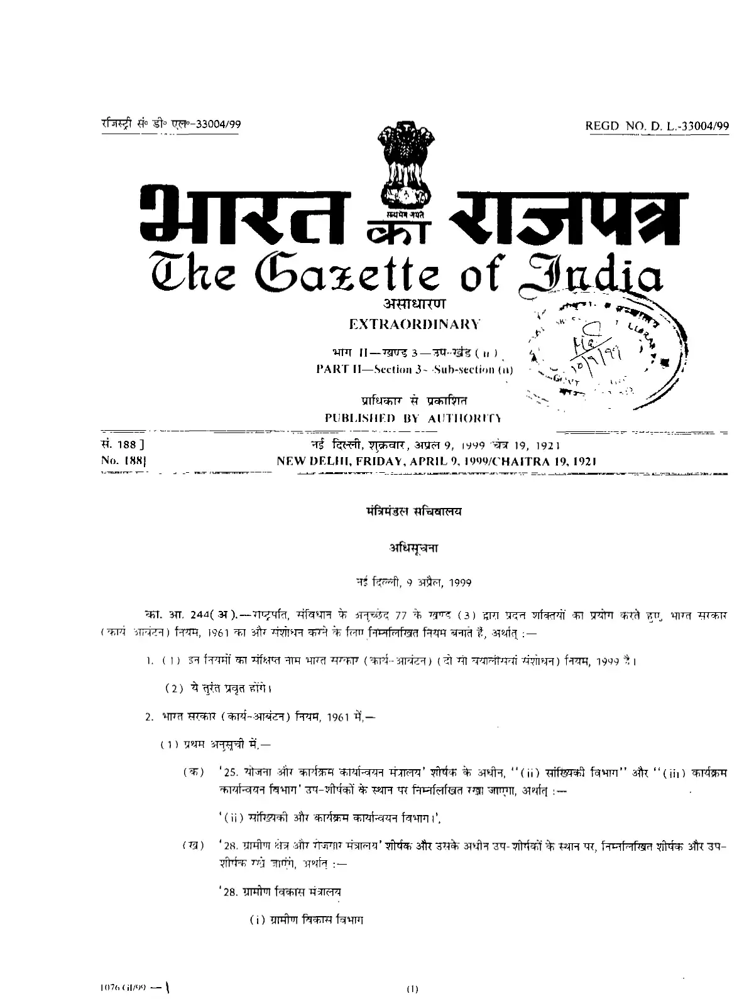
Page 2 of 20
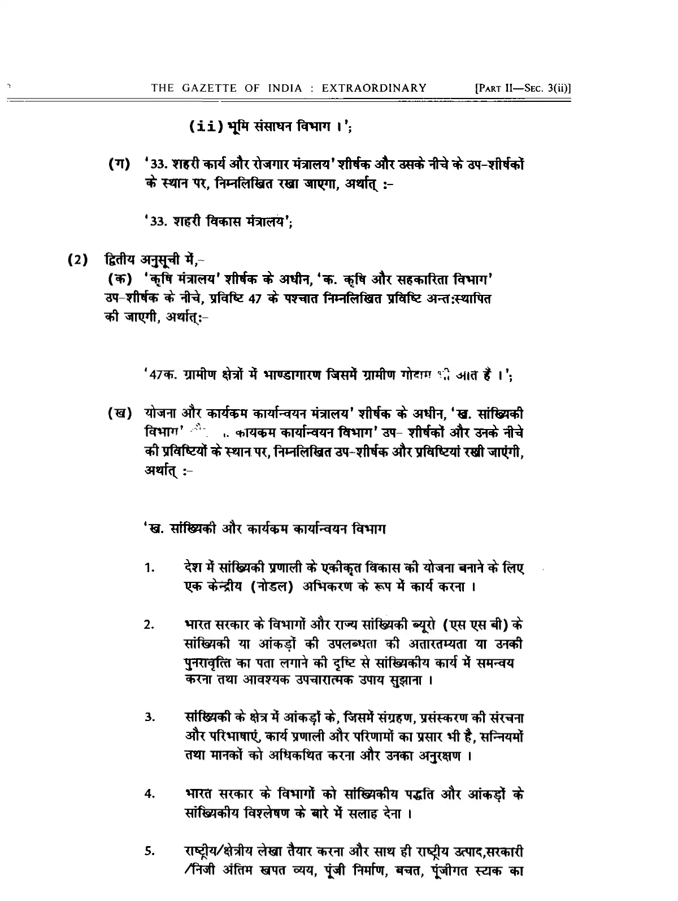
Page 3 of 20
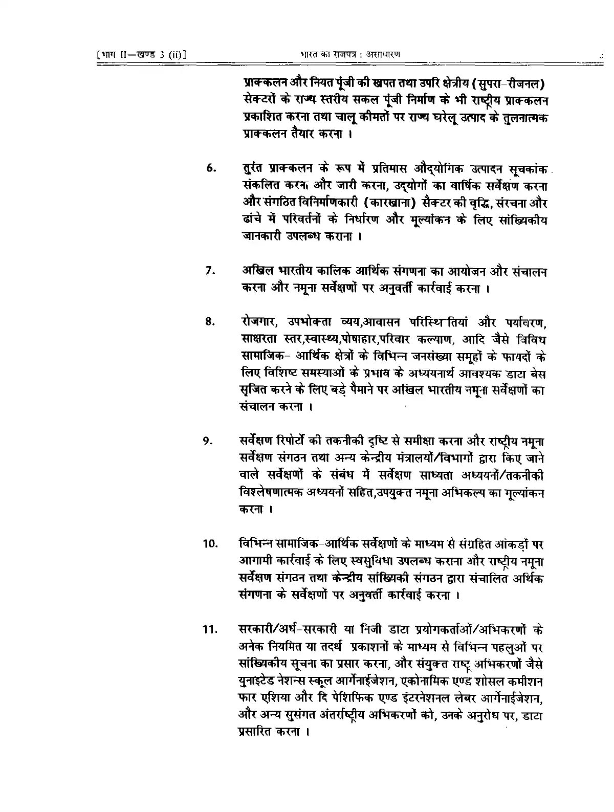
Page 4 of 20
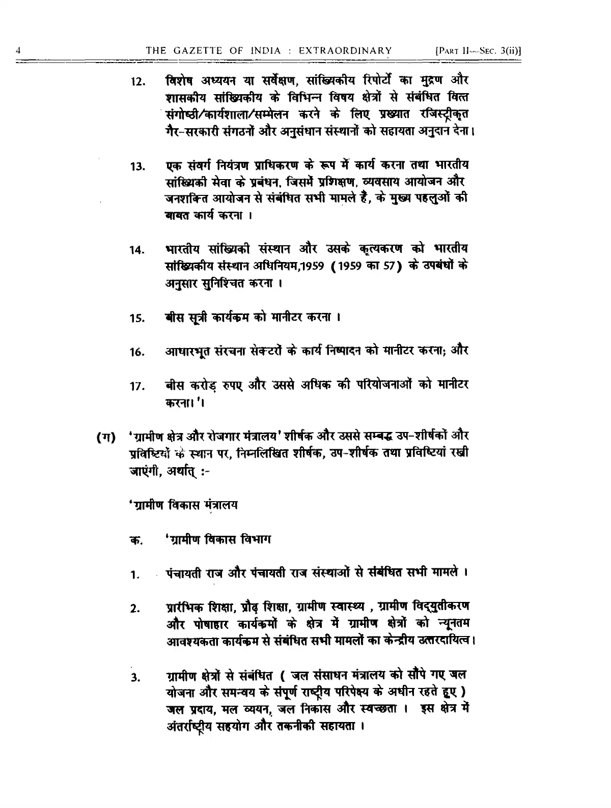
Page 5 of 20
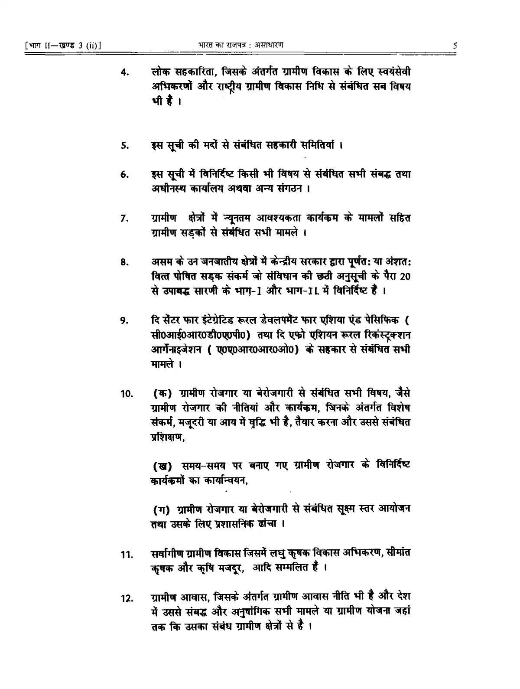
Page 6 of 20
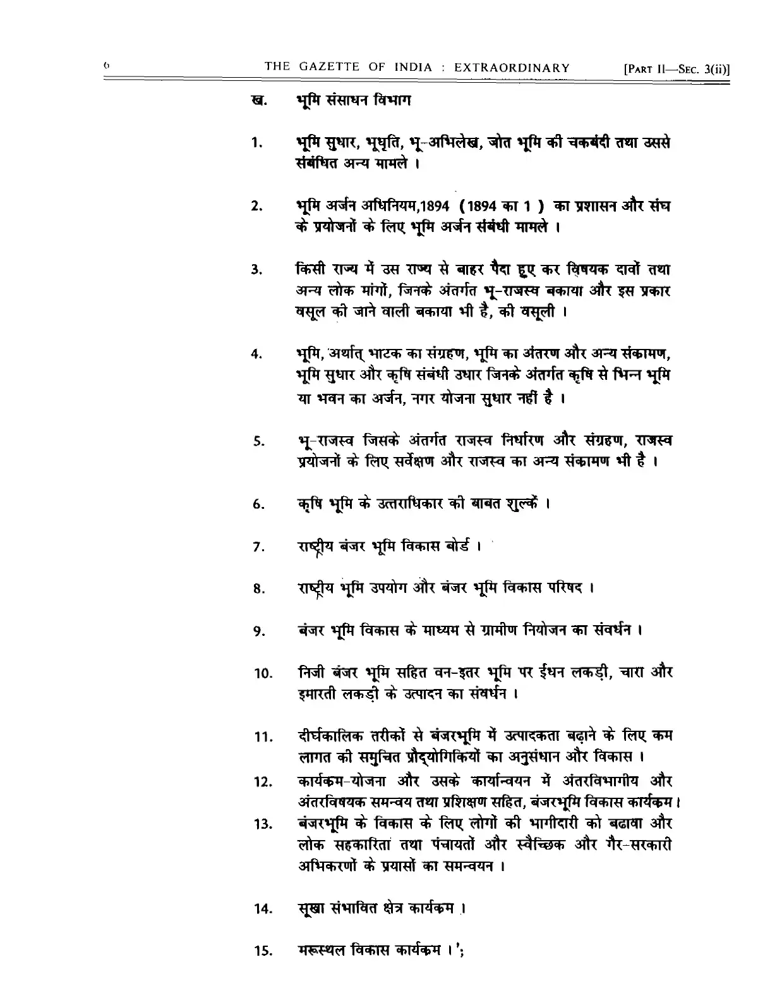
Page 7 of 20
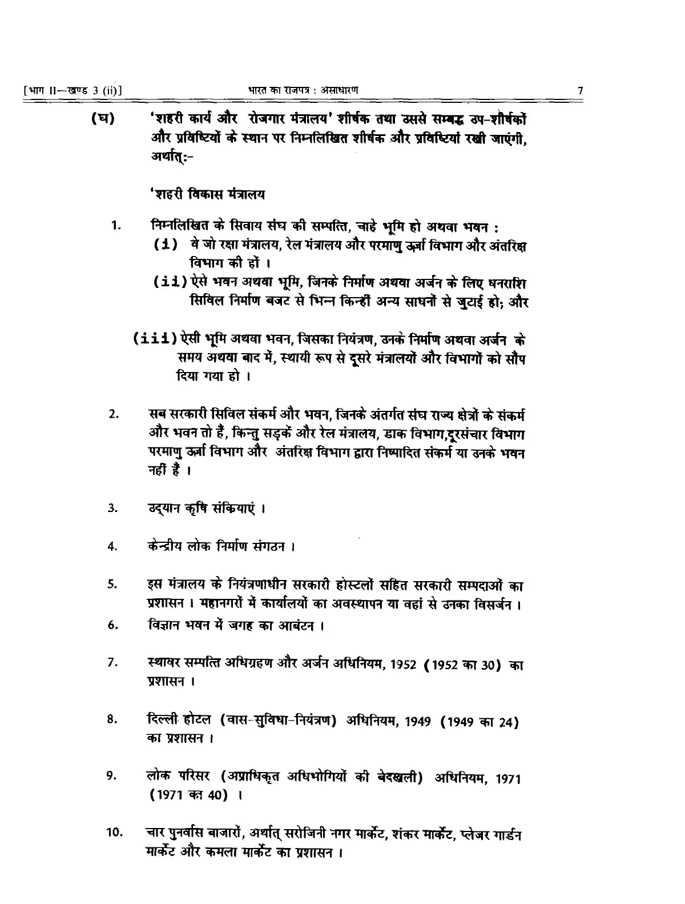
Page 8 of 20
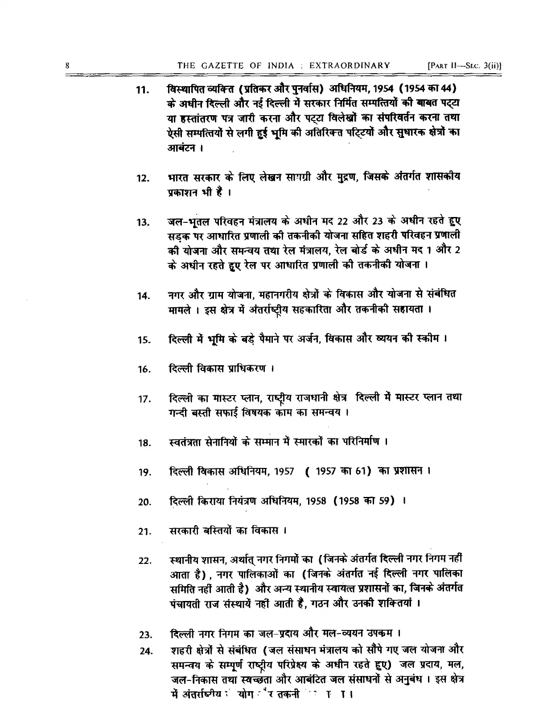
Page 9 of 20
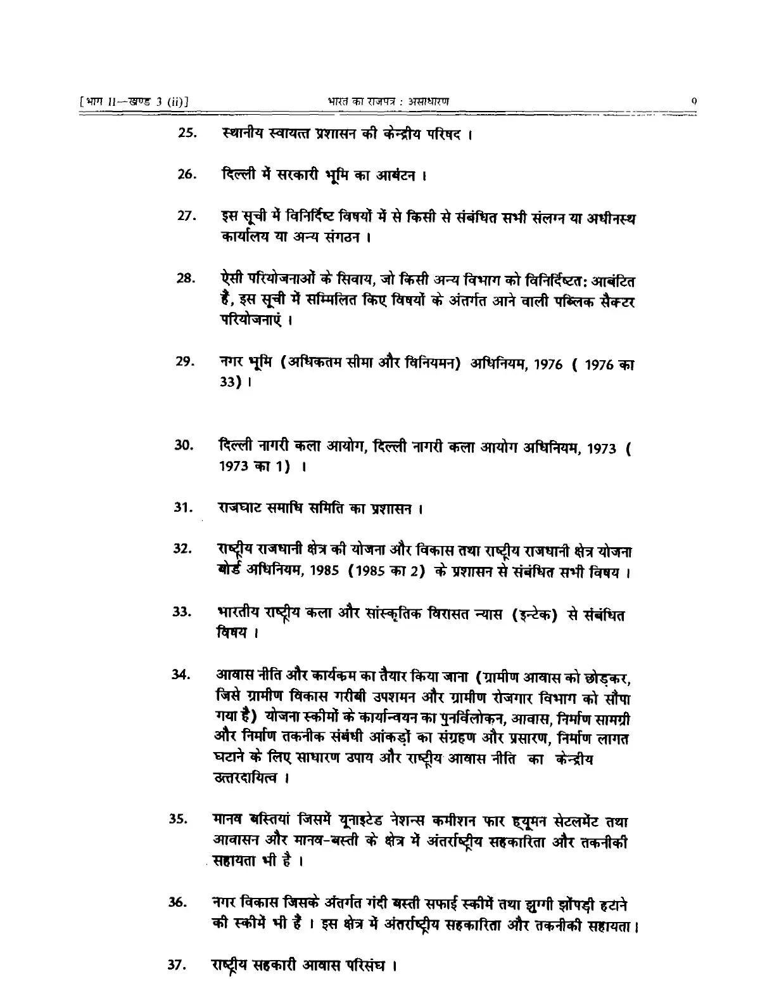
Page 10 of 20
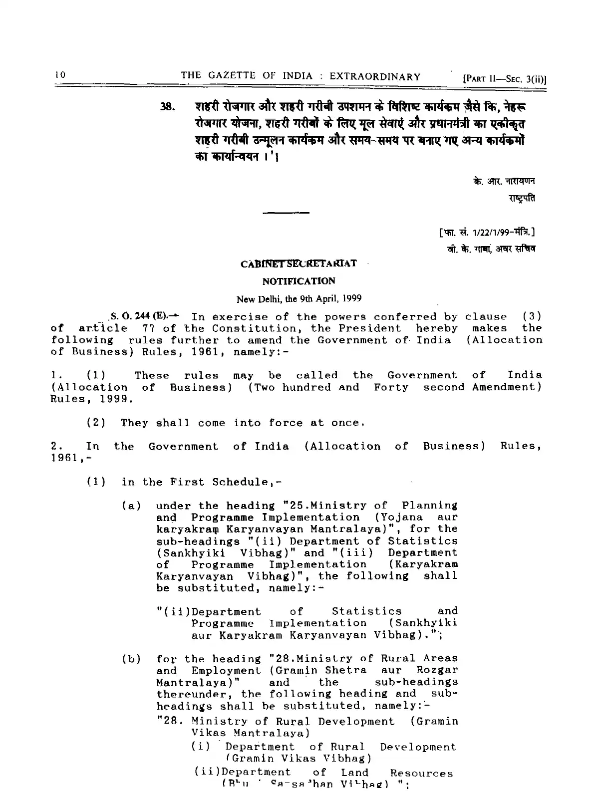
12Schedule 1 › Ministry of Planning and Programme Implementation › Department of Statistics; Schedule 1 › Ministry of Planning and Programme Implementation › Department of Programme Implementation
- ii. Department of Statistics and Programme Implementation
applied at schedule 1 › ministry 25 › department ii in the Rules after #242
Schedule 1 › Ministry of Rural Areas and Employment
- 28. Ministry of Rural Development
- i. Department of Rural Development
- ii. Department of Land Resources (Bhu Sansadhan Vibhag)
applied at schedule 1 › ministry 28 in the Rules after #242
new hindi differs
Page 11 of 20
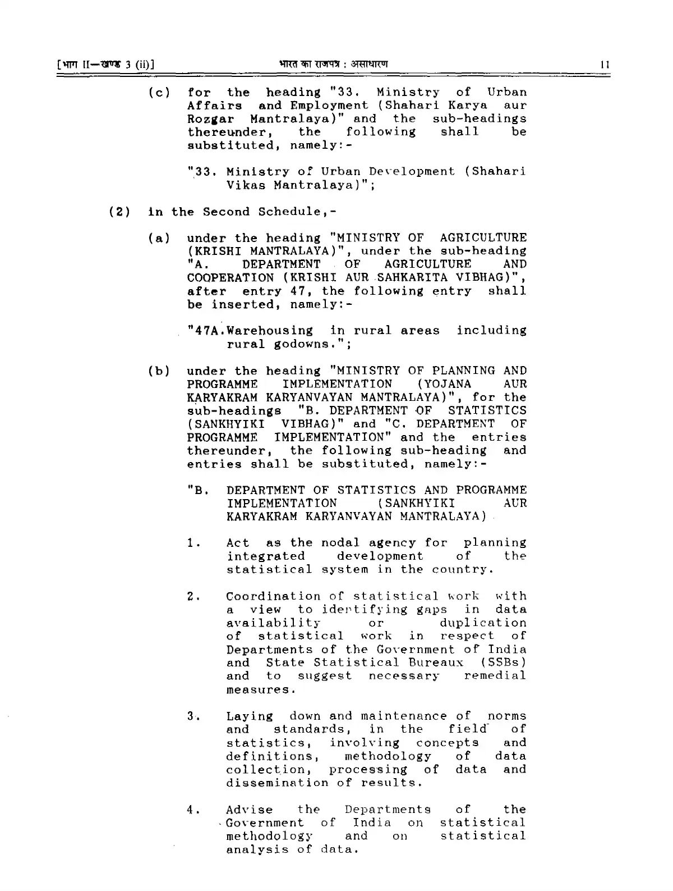
345Schedule 1 › Ministry of Urban Affairs and Employment
- 33. Ministry of Urban Development
applied at schedule 1 › ministry 33 in the Rules after #242
after Schedule 2 › MINISTRY OF AGRICULTURE › DEPARTMENT OF AGRICULTURE AND COOPERATION › entry 47
- 47A. Warehousing in rural areas including rural godowns.
applied at schedule 2 › ministry MINISTRY OF AGRICULTURE › department A › part IV › entry 47A in the Rules after #242
Schedule 2 › MINISTRY OF PLANNING AND PROGRAMME IMPLEMENTATION › DEPARTMENT OF STATISTICS; Schedule 2 › MINISTRY OF PLANNING AND PROGRAMME IMPLEMENTATION › DEPARTMENT OF PROGRAMME IMPLEMENTATION
- B. DEPARTMENT OF STATISTICS AND PROGRAMME IMPLEMENTATION
- 1. Act as the nodal agency for planning integrated development of the statistical system in the country.
- 2. Coordination of statistical work with a view to identifying gaps in data availability or duplication of statistical work in respect of Departments of the Government of India and State Statistical Bureaux (SSBs) and to suggest necessary remedial measures.
- 3. Laying down and maintenance of norms and standards, in the field of statistics, involving concepts and definitions, methodology of data collection, processing of data and dissemination of results.
- 4. Advise the Departments of the Government of India on statistical methodology and on statistical analysis of data. | 2 [PART II—Sic. 3(ii)]
- 5. Preparation of national and regional accounts AS well as publication of annual estimates of national product Government and private final consumption expenditure capital formation, saving, estimates of capital stock and consumption of fixed capital, as also state level gross capital formation of…
and 12 more
- 6. Compilation and release of the index of industrial production (TIP) every month in the form of quick estimates'; conducting of Annual Survey of Industries (ASI); and providing of statistical information to assess and evaluate the changes in the growth, composition and structure of the organised…
- 7. Organisation and conduct of periodic all India economic census and follow-up sample surveys.
- 8. Conducting of large scale all-India sample surveys for creating data base needed for studying the impact of specific problems for the benefit of different population groups in diverse socio-economic areas such as employment, consumer expenditure, housing conditions and environment, literacy…
- 9. Examination of the survey reports from technical angle and evaluation of appropriate sampling design including survey feasibility studies/ techno-analytical studies in respect of surveys conducted by the National Sample Survey Organisation (NSSO) and other Central Ministries and Departments.
- 10. Providing of an in-house facility to process data collected through various socio-economic surveys and follow-up surveys of Economic Census conducted by the National Sample Survey Organisation and the Central Statistical Organisation.
- 11. Dissemination of statistical information on various aspects through a number of regular or ad-hoc publications to Government, semi-Government or private data user/agencies; and dissemination of data, on request, to United Nations Agencies like United Nations School Organisation, Economic and…
- 12. Giving grants-in-aid to registered non-governmental organisations and research institutions of repute for undertaking special studies or surveys, printing of statistical reports and finance seminar workshop, or conference relating to different subject areas of official statistics.
- 13. Functioning as the Cadre Controlling Authority and deal with the centralised aspects of managing the Indian Statistical Service including all matters pertaining to training career planning and manpower planning.
- 14. The Indian Statistical Institute and ensuring its functioning in accordance with the provisions of the Indian Statistical Institute Act, 1959 (57 of 1959).
- 15. Monitoring of 20 point programme.
- 16. Monitoring of the performance of Infrastructure Sectors; and
- 17. Monitoring of projects of Rs.20 crores and above.
applied at schedule 2 › ministry MINISTRY OF PLANNING AND PROGRAMME IMPLEMENTATION › department B in the Rules after #242
read page break, states inferred loose
Page 12 of 20
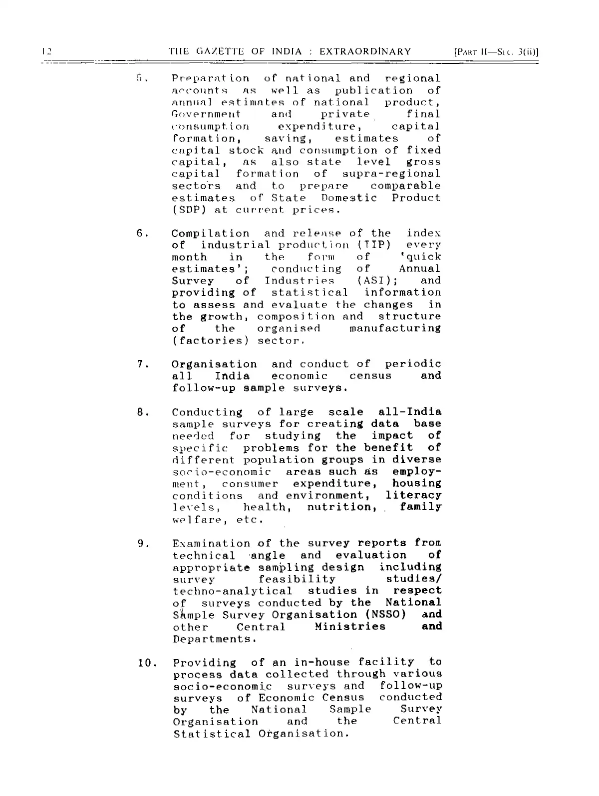
Page 13 of 20
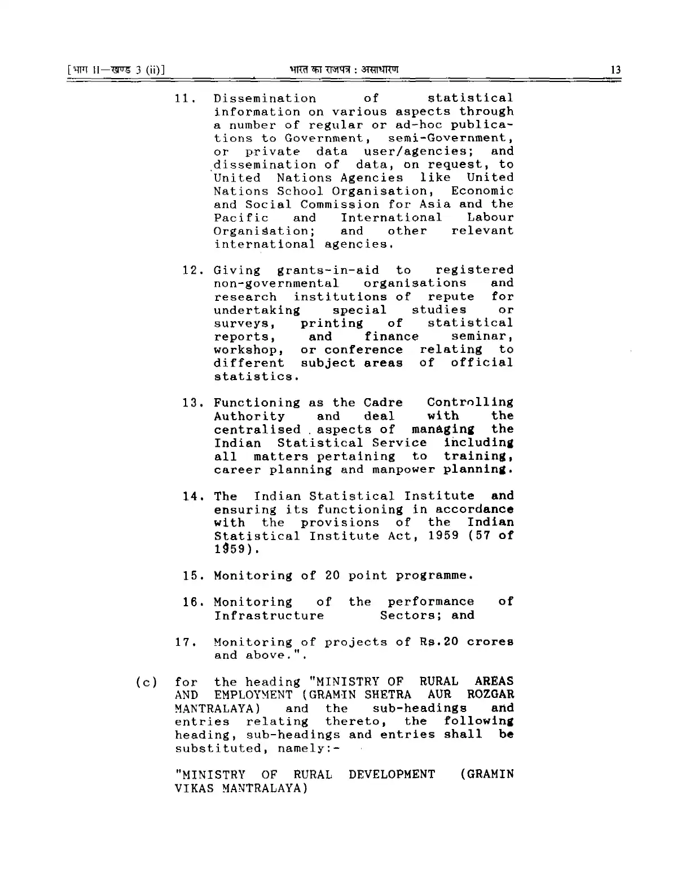
6Schedule 2 › MINISTRY OF RURAL AREAS AND EMPLOYMENT
- MINISTRY OF RURAL DEVELOPMENT
- A. DEPARTMENT OF RURAL DEVELOPMENT
- 1. All matters relating to panchayati raj and panchayati raj institutions.
- 2. Nodal responsibility for all matters relating to the Minimum Needs Programme in rural areas, in the field of elementary education adult education rural health rural electrification and the nutrition pro grammes.
- 3. Water supply (subject to overall national perspective of water planning and coordination assigned to the Ministry of Water Resources), sewage drainage and sanitation relating to rural areas. International cooperation and technical assistance in this field.
- 4. Public cooperation, including all matters relating to voluntary agencies for rural development and National Fund for Rural Development.
and 27 more
- 5. Cooperatives relatable to the items in this list.
- 6. All attached or subordinate offices or other organisations concerned with any of the subjects specified in this list.
- 7. All matters relating to rural roads including those under the Minimum Needs Programme in the rural areas.
- 8. Road works financed in whole or in part by the Central Government in tribal areas of Assam specified in Part I and Part II of the Table appended to paragraph 20 of the Sixth Schedule to the Constitution.
- 9. All matters relating to cooperation with the Centre for Integrated Rural Development for Asia and Pacific (CIRDAP) and the Afro-Asian Rural Reconstruction Organisation (AARRO). 15
- 10.
- a. All matters pertaining to rural employment or unemployment such as working out of strategies and programmes for rural employment including special works, wage or income generation and training related. thereto
- b. Implementation of the specific programmes of rural employment evolved from time to time.
- c. Micro level planning related to rural employment or unemployment and administrative infrastructure therefor.
- 11. Integrated rural development including small farmers development agency marginal farmers and agricultural labourers, etc.
- 12. Rural housing including Rural Housing Policy and all matters germane and incidental thereto under country or rural planning, in 80 far as it relates to rural areas.
- B. DEPARTMENT OF LAND RESOURCES
- 1. Land reforms, land tenures land records, consolidation of holding and other related matters.
- 2. Administration of the Land Acquisition Act, 1894 (1 of 1894) and matters relating to acquisition of land for purposes of the Union.
- 3. Recovery of claims in a State in respect of taxes and other public demands, including arrears of land revenue and sums recoverable as such arrears, arising outside that State.
- 4. Land, that is to say, collection of rents, transfer and alienation of land land improvement and agricultural loans excluding acquisition of non-agricultural land or buildings town planning improvements.
- 5. Land revenue, including the assessment and collection of revenue, survey of revenue purposes, alienation of revenues. 16
- 6. Duties in respect of succession to agricultural land.
- 7. National Wastelands Development Board.
- 8. National Land Use and Wasteland Development Council.
- 9. Promotion of rural employment through Wastelands Development.
- 10. Promotion of production of fuelwood fodder and timber on non-forest lands including private wastelands.
- 11. Research and development of appropriate low cost technologies for increasing productivity of wastelands in sustainable ways.
- 12. Inter-departmental and interdisciplinary coordination in programme planning and implementation of the Wastelands Development Programme including training.
- 13. Promotion of people's participation and public cooperation and coordina“. tion of efforts of Panchayats and voluntary and non-Government agencies for Wastelands Development.
- 14. Drought prone area programmes.
- 15. Desert Development Programmes.
applied at schedule 2 › ministry MINISTRY OF RURAL AREAS AND EMPLOYMENT in the Rules after #242
read hindi missing, read page break
Page 14 of 20
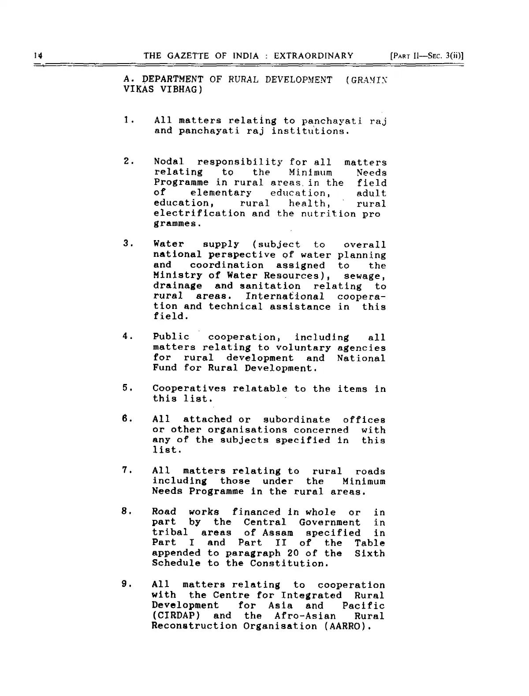
Page 15 of 20
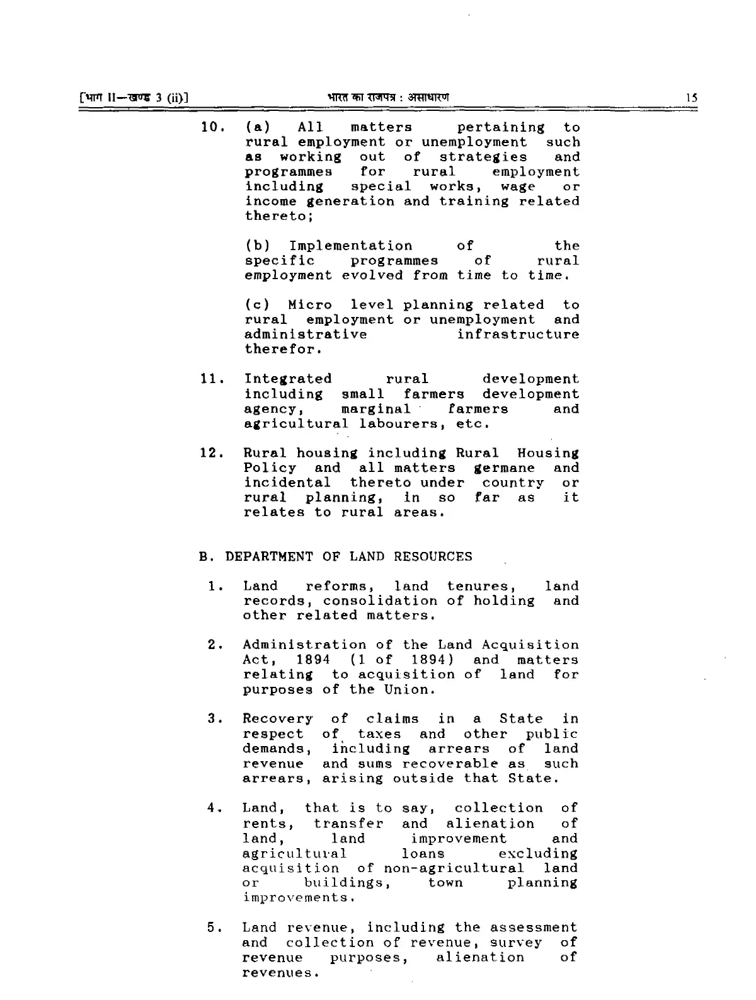
Page 16 of 20
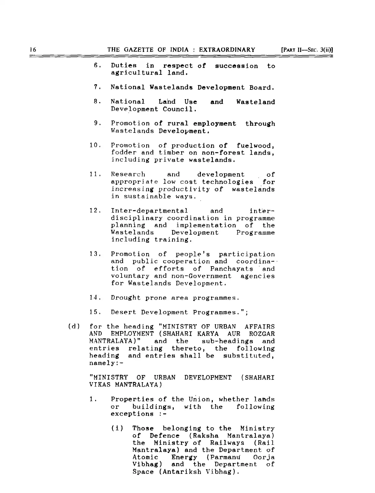
7Schedule 2 › MINISTRY OF URBAN AFFAIRS AND EMPLOYMENT
- MINISTRY OF URBAN DEVELOPMENT
- 1. Properties of the Union, whether lands or buildings, with the following exceptions :-
- i. Those belonging to the Ministry of Defence (Raksha Mantralaya) the Ministry of Railways (Rail Mantralaya) and the Department of Atomic Energy (Parmanu Oorja Vibhag) and the Department of Space (Antariksh Vibhag). 17
- ii. Buildings or lands, the construction or acquisition of which has been financed otherwise than from the Civil Works Budget; and
- iii. Buildings or lands, the control of which has at the time of construction or acquisition or subsequently been permanently made over to other Ministries and Departments.
- 2. All Government Civil Works and Buildings including those of Union territories excluding Roads and excluding works executed by or buildings belonging to the Ministry of Railways (Rail Mantralaya), Department of Posts (Dak Vibhag), Department of Telecommunications (Doorsanchar Vibhag), Department of…
and 36 more
- 3. Horticulture operations.
- 4. Central Public Works Organisation.
- 5. Administration of Government estates including Government Hostels under the control of the Ministry. Location or dispersal of offices in or from the metropolitan cities.
- 6. Allotment of accommodation in Vigyan Bhawan.
- 7. Administration of the Requisitioning and Acquisition of Immovable Property Act, 1952 (30 of 1952).
- 8. Administration of Delhi Hotels (Control of Accommodation Act, 1949 (24 of 1949).
- 9. The Public Premises (Eviction of Unauthorised Occupants) Act, 1971 (40 of 1971).
- 10. Administration of four Rehabilitation Markets viz. Sarojini Nagar Market Shankar Market, Pleasure Garden Market and Kamla Market. 107661149-3
- 11. Issue of lease or conveyance deeds in respect of Government built properties in Delhi and New Delhi under the Displaced Persons (Compensation and Rehabilitation) Act, 1954 (44 of 1954) and conversion of lease deeds, allotment of additional strips of land and correctional areas adjoining such…
- 12. Stationery and Printing for the Government of India including official publications.
- 13. Planning and Coordination of urban transport systems, with technical planning and road based systems being subject to items 22 and 23 under the Ministry of Surface Transport (Jal- Bhootal Pariwahan Mantralaya) and technical planning of rail based systems being subjects to items 1 and 2 under the…
- 14. Town and Country Planning; matters relating to the Planning and Development of Metropolitan Areas, International Cooperation and technical assistance in this field.
- 15. Schemes of large scale acquisition development and disposal of land in Delhi.
- 16. Delhi Development Authority.
- 17. Master Plan of Delhi, Coordination of work in respect of the Master Plan and Slum Clearance in the National Capital Territory of Delhi.
- 18. Erection of memorials in honour of freedom fighters.
- 19. Administration of the Delhi Development Act, 1957 (61 of 1957).
- 20. The Delhi Rent Control Act, 1958 (59 of 1958).
- 21. Development of Government Colonies.
- 22. Local Government, that is to say, the constitution and powers of the Municipal Corporations (excluding the Municipal Corporation of Delhi) Municipalities (excluding the New Delhi Municipal Committee), other Local Self-Government Administrations excluding Panchayati Raj Institutions.
- 23. The Delhi Water Supply and Sewage Disposal Undertaking of the Municipal Corporation of Delhi.
- 24. Water supply (subject to overall national perspective of water planning and coordination assigned to the Ministry of Water Resources), sewage drainage and sanitation relating to urban areas and linkages from allocated water resources. International cooperation and technical assistance in this field.
- 25. The Central Council of Local Self-Government
- 26. Allotment of Government land in Delhi.
- 27. All attached or Subordinate Offices or other organisations concerned with any of the subjects specified in this list.
- 28. Public Sector Projects falling under the subjects included in this list except such projects as are specifically allotted to any other Department.
- 29. The Urban Land (Celling and Regulation) Act, 1976 (33 of 1976).
- 30. Delhi Urban Art Commission, the Delhi Urban Art Commission Act, 1973 (1 of 1973).
- 31. Administration of Rajghat Samadhi Committee.
- 32. All matters relating to Planning and Development of the National Capital Region and administration of the National Capital Region Planning Board Act, 1985 (2 of 1985).
- 33. Matters relating to the Indian National Trust for Art and Cultural Heritage (INTACH)
- 34. Formulation of housing policy and programme (except rural housing which is assigned to the Department of Rural Development, Poverty Alleviation and Rural Employment (Gramin Vikas, Garibi Upshaman aur Gramin Rozgar Vibhag) Rozgar review of the implementation of the Plan Schemes collection and…
- 35. Human Settlements including the United Nations Commission for Human Settlements and International Corporation and Technical Assistance in the field of Housing and Human Settlements.
- 36. Urban Development including Slum Clearance Schemes and the Jhuggi and Jhonpri Removal Schemes. International Cooperation and technical assistance in this field.
- 37. National Cooperative Housing Federation.
- 38. Implementation of the specific programmes of Urban Employment and Urban Poverty Alleviation, such as Nehru Rozgar Yojana (NRY), Urban Basic Services for the Poor (UBSP), and Prime Minister's Integrated Urban Poverty Eradication Programme (PMI UPEP) and other programmes evolved from time to time.
applied at schedule 2 › ministry MINISTRY OF URBAN AFFAIRS AND EMPLOYMENT in the Rules after #242
read page break
Page 17 of 20
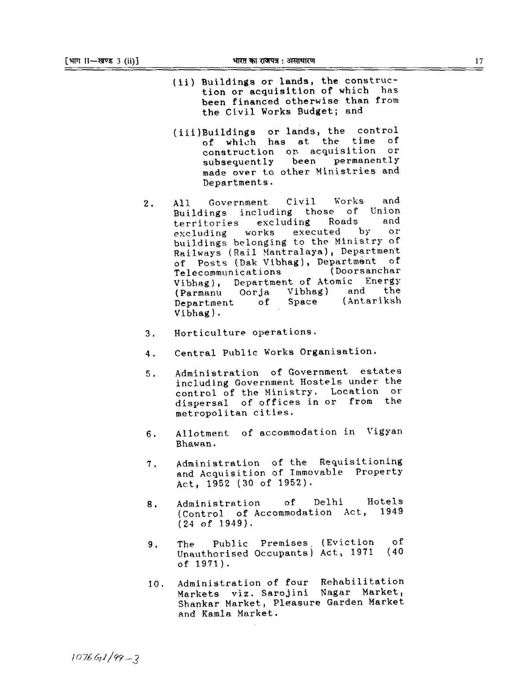
Page 18 of 20
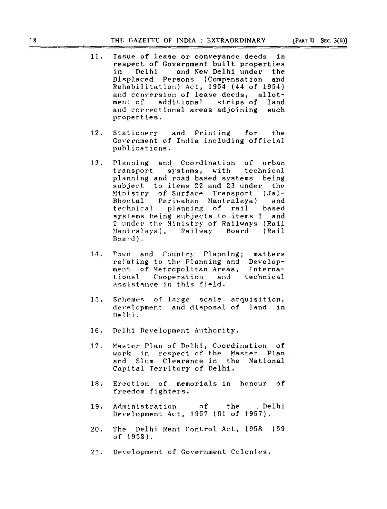
Page 19 of 20
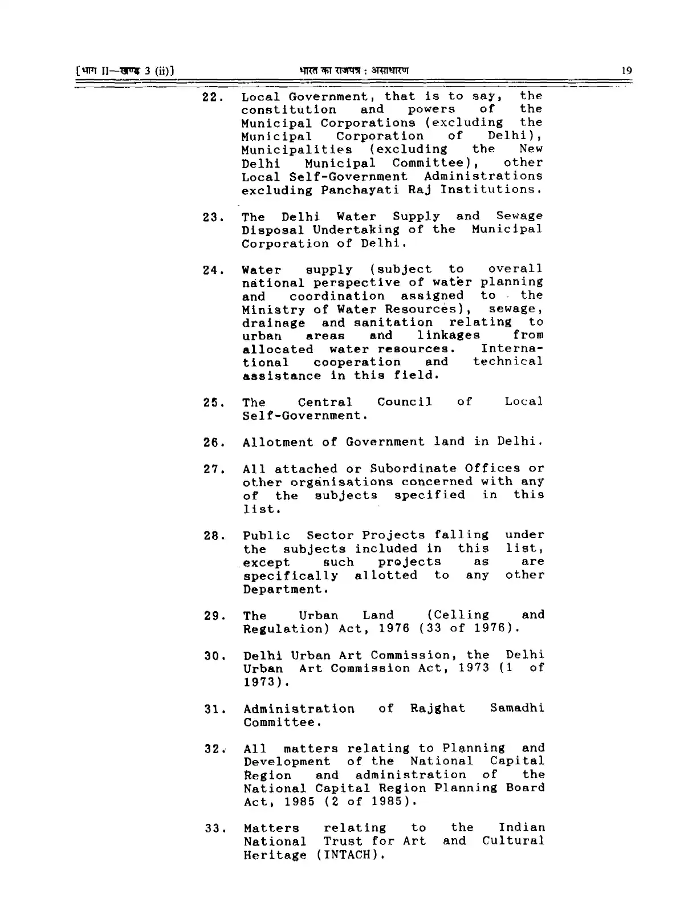
Page 20 of 20
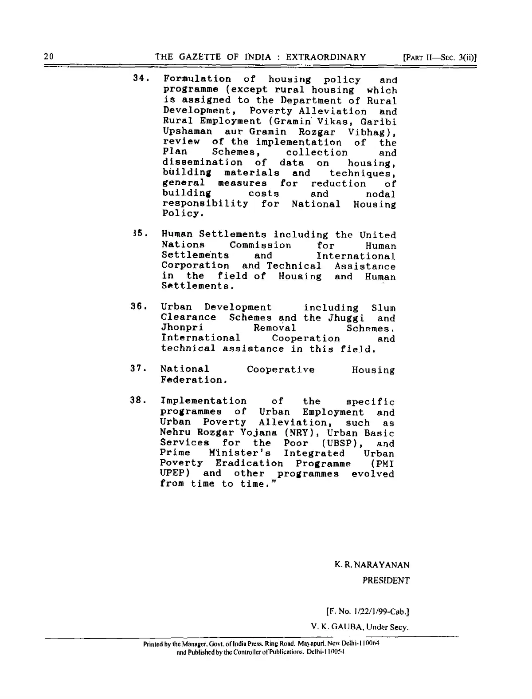
How this document was read
Edits to the reading
| Date | By | Edit | Before → after |
|---|---|---|---|
| 12 November 2026 | claude | word corrected | |
| 12 November 2026 | claude | word corrected | |
| 12 November 2026 | claude | word corrected |
Changes placed by an inference rule
| Change | Rule | Status | What |
|---|---|---|---|
| 5 | loose | accepted | change 5: department DEPARTMENT OF PROGRAMME IMPLEMENTATION taken for department DEPARTMENT OF PROGRAMME IMPLEMEN- TATION (KARYAKRAM KARYANVAYAN VIGHAG) (1) Monitoring of 20 point programme, named… |
From the Government of India (Allocation of Business) Rules, 1961 and their amendments, as published by the Cabinet Secretariat (cabsec.gov.in), read by orgpedia. The readings of the older scanned gazettes have known gaps.